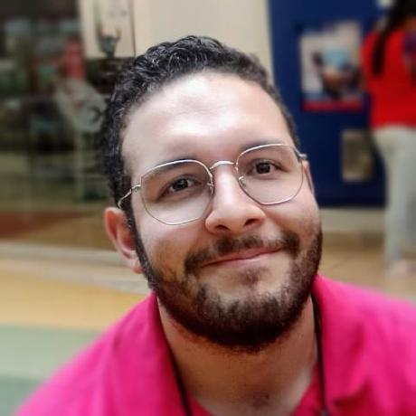
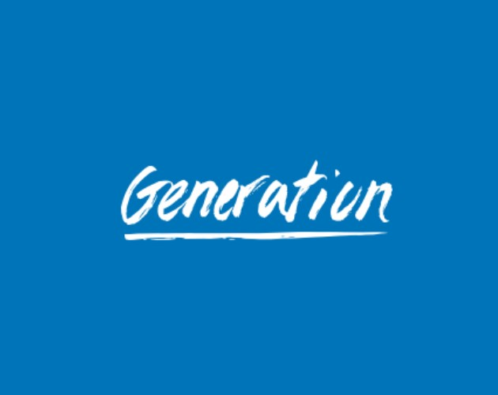
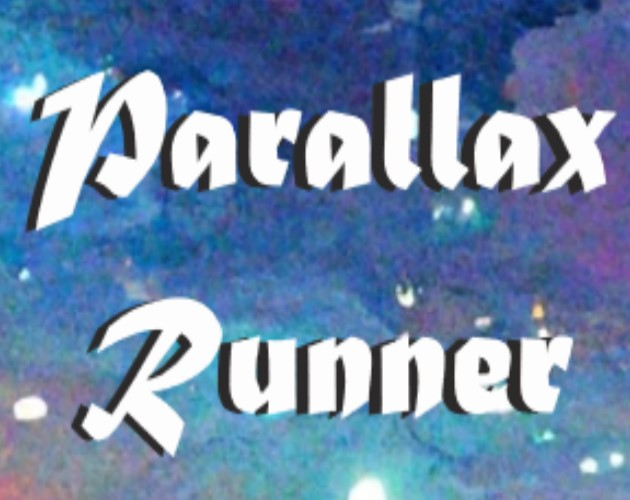
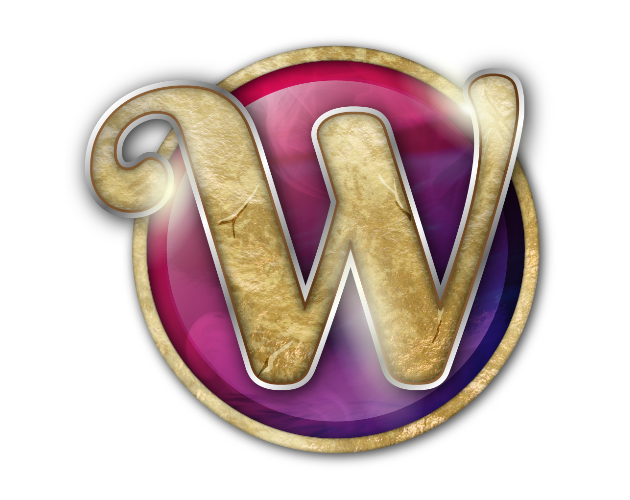
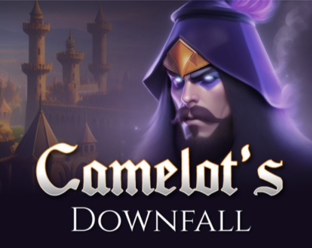
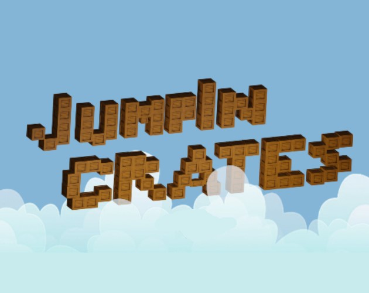

Sobre mi

Hola! Mi nombre es Tomas Echeverri y soy un desarrollador de videojuegos en Unity, me gusta crear juegos enfocados en la educación o historias fantasticas, principalmente de multijugador y RPG. Esta aventura comenzó desde que mi amor por los juegos online se encontró con mis ganas de aprender sobre programación.
Mis habilidades blandas con mayor nivel son mi paciencia, mi capacidad de ser autodidacta y mi pensamiento orientado a la resolución de problemas.
Objetivos
A lo largo de este interminable viaje mi deseo es obtener el conocimiento y las habilidades que me permitan crear mundos e historias que acompañen a la gente
Estudios

Generation Colombia
10/03/2023 - 04/05/2023
Bootcamp de desarrollador junior en Unity en donde se desarrollaron 2 juegos de Game Jam a lo largo del curso
Página Oficial
Proyectos

Parallax Runner
Proyecto Curso Udemy
Plataformas, Infinito, 2D, Mobile/Web
Desarrollador y programador de UI, AI y mecanicas
Jugar Ahora

Wiccan
Proyecto final Generation Colombia
RPG, 3D, Lore, Windows
Project Manager, desarrollador y programador de UI, AI y mecanicas
Jugar Ahora

Camelot's Downfall
Game Jam 2 (60 horas) Generation Colombia
RPG por turnos, 2.5D, Web
Programador de movimiento de personajes, animaciones 2D y sonidos de ambiente
Jugar Ahora

Jump In Crates
Gam Jam 1 (9horas) Generation Colombia
Plataformas, Construcción, 3D, Web
Programador de la funcionalidad de la UI y cambios de escena
Jugar Ahora
Contacto
Tomas Echeverri Puerta
- Ubicacion: Medellin, Colombia
- Telefono: +57 3196894111
- Correo: techeverri96@gmail.com
Redes